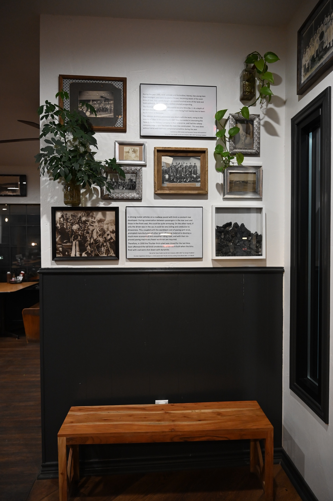

We Call It New York Hill Because They Called It New York Hill
The history of the place the restaurant takes its name from.
The ghost town of Thurber, on the Erath and Palo Pinto County line along I-20, produced coal and brick from 1888 to 1921. At the time it was described as the “largest company town in the state of Texas.”
Managers for the Texas and Pacific Coal Company, many from the northeastern United States, lived in homes with picket fences and indoor plumbing. The area came to be called “New York” Hill because of them.
Janis and Lesly Mills chose the restaurant’s name to honor that history. Local families have donated photos and artifacts, which hang in the main dining room.
Visiting Thurber?
The nearby W.K. Gordon Center for Industrial History of Texas is open to all ages.
